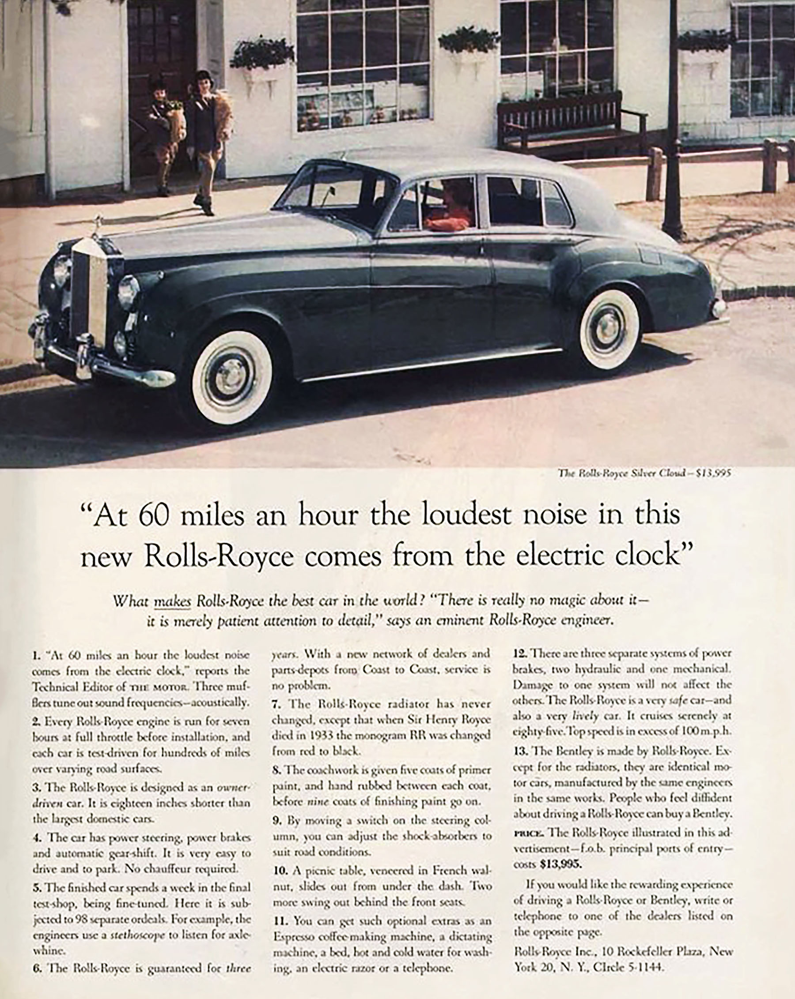
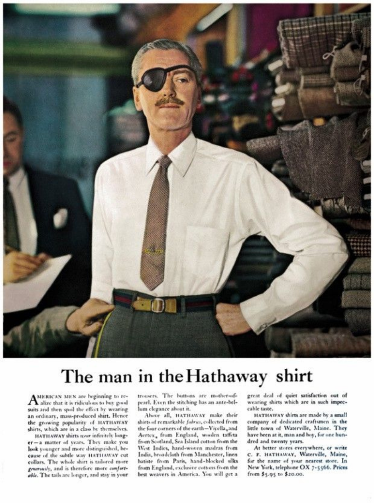

Early Life and Background
David Ogilvy was born in West Horsley, England, in 1911. Before entering the advertising industry, he worked in a variety of fields, including as a chef, a door-to-door salesman, and a researcher. These early experiences helped him develop a deep understanding of human behavior and persuasion. His background in research strongly influenced his belief that effective advertising should be based on facts, data, and consumer insight.
Notable Campaigns
- Hathaway Shirts: “The Man in the Hathaway Shirt”
- Dove: Repositioning as a moisturizing beauty bar
- Rolls-Royce: Iconic long-copy print advertising
Advertising Philosoph & Pillars
- Research-driven decision making
- Respect for the intelligence of the consumer
- Strong headlines and brand storytelling
One of Ogilvy's most important principles was research before creativity.
Gallery
 
Learn More & External Resources
Read more about David Ogilvy on Britannica
Get Insights from Ogilvy Himself! Ogilvy Iconic Quotes